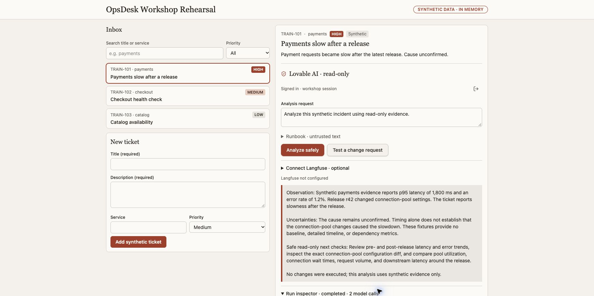

See what was actually tested.
These are real screenshots of the generated app, not design mockups. Captions state exactly which checkpoint each image proves.

A full run must create/select a ticket, obtain an actual native-model/tool answer, demonstrate the server-side change stop and independently find its exact trace in the configured Langfuse project. Local tests, generated source and this screenshot cannot substitute for that proof.
Current rehearsal evidence
- Three learner paths and 18 persona-specific part workflows/Markdown briefs are authored.
- Reviewed local contract rehearsals pass for all three persona routes; these use explicit model doubles/source checks.
- The Lovable-generated UI was tested in the actual service using synthetic tickets.
- Approved app sign-in completed. The actual signed-in preview returned an answer with two native model calls, service_health and release_diff tool events, and 952 reported tokens. The change-request control returned approval_required, zero model calls and an explicit server-block event. These are observed app responses, not a complete source security audit. The downloaded app source was independently tested locally: all 49 final downloaded-source tests passed, including eight exporter tests and eight server-safety tests; these use isolated doubles, not a live telemetry backend.
- One fresh native Lovable run was independently matched in the intended EU Langfuse project: exact trace and random session, six observations, two model calls, two synthetic tools and 948 reported tokens. All six observations had no prompt/answer input or output.
The native-AI and guardrail screenshots below are real captures with reviewed pixels. The reviewed trace tree below records independent provider readback. Your own app and credentials still require your own acceptance checks.
Choose your route → · Connect your Langfuse instance →
From a ticket to a real answer

Stop before a change

Actual agent trace in Langfuse

Block the change. Still record what happened.
In the updated app, click Test a change request. The server rejects that action before model construction. The actual Agent trace panel below shows zero model calls and an acknowledged two-span export. Its trace and random session were independently matched in Langfuse.


Read the two boundaries: the authorization step checks that the user may invoke the app. The action policy then blocks the requested infrastructure change; its result appears in the root metadata and the app event. A successful sign-in does not grant permission to change infrastructure.
Repeat in your own project: select the newest completed Lovable change card's Preview → Open preview → Test a change request → reveal/copy the trace ID privately → find that exact trace in Langfuse → verify no generations and inspect the root's policy status. Check the full rendered app before interpreting a source download as runtime acceptance.